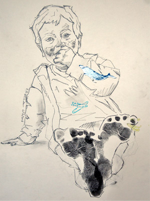

Unique children's portraits with their little fingers and toes
If you are looking for a unique and thoughtful gift or a memory of your children that won't fade we would like to offer you something special and timeless - a Print Portrait. We bring together pencil drawing portraits and prints in a single piece of artwork. We will come and take the actual prints of your child's hands or feet so you can have a latest and beautiful memory of your children.
About our style
Our style is striking, strong with free-flowing forms focusing on the main feature of the picture - the face. We have been influenced by several important artist including Pablo Picasso, Cy Twombly and Alberto Giacometti. A little more about me.
We do regular portraits too
If you are just looking for a straight forward portrait of your family then of course we are more than happy to help. Just send us a picture of your children and we will create a wonderful pencil drawing.
How do we make these drawings?
We have spent some time experimenting with the combination of adding prints to a regular life drawing. There are still a lot more different things we want to play with so this is only a starting point. Take a look at the process.

How to get in touch:
Message - Get in touch form
Email - oliver@printportraits.com